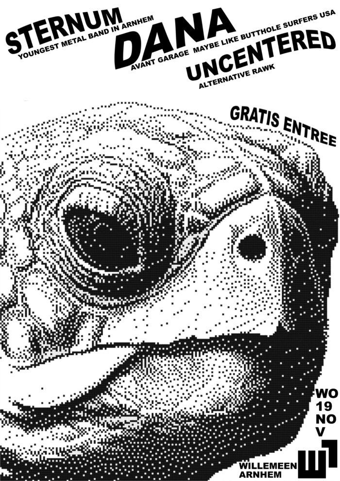

Stijn de Wit — Gitaar
Rock/alternative gitaar • Focus op timing, expressie en samenspel; ik wil dit verdiepen via bandwerk, coaching en theorie.
Deltion — Artiest/Muzikant
Focus: timing • expressie • samenspel
Locatie: Velp / Arnhem
Livefoto (portfolio)
Video’s
Live
Porcelain Eyes — Sternum.
Laatste nummer van de set. Na de lange intro bouw ik spanning op en breng ik stuwing om het publiek mee te krijgen.
Laatste nummer van de set. Na de lange intro bouw ik spanning op en breng ik stuwing om het publiek mee te krijgen.
Repetitie / band
The Boy I'll Forever Love — Sternum.
Gain open, solo aan.
Gain open, solo aan.
Solo / auditie
Solo-optreden — Studio 26.
Jaaroptreden van de muziekschool; gevraagd om één nummer te spelen.
Jaaroptreden van de muziekschool; gevraagd om één nummer te spelen.
Tip: zet video’s op YouTube als “Verborgen (unlisted)” zodat alleen mensen met de link ze zien.
Optredens & Media

Willemeen — 4 februari
Samen met Blackout en Mokrypse. Eerste grotere metal line-up in Arnhem.
Samen met Blackout en Mokrypse. Eerste grotere metal line-up in Arnhem.

Arnhemse Uitnacht — Café Kroon
Opening van de avond met Sternum. Volle zaal.
Opening van de avond met Sternum. Volle zaal.

Willemeen — 19 november
EP “Porcelain Eyes” periode. Samen met Dana en Uncentered.
EP “Porcelain Eyes” periode. Samen met Dana en Uncentered.
Extra poster / aankondiging (Sternum).
3voor12 — “Porcelain Eyes”
• Deelname aan Popspot ontwikkeltraject• EP-opname bij Lil Heaven Studios (Arnhem)
• Interview / eventpagina gepubliceerd over Sternum
• Uitnacht.nl: “moddervette ritmesectie met snijdende gitaren”,"Ondanks hun jonge leeftijd klinkt Sternum volwassen, ambitieus en compromisloos. Met de release van hun eerste EP en een groeiend aantal optredens is Sternum een band om scherp in de gaten te houden. — link
Ervaring
- [2025] — [optreden / project] (wat was jouw rol, wat geleerd)
- [2024] — [band / lessen] (frequentie, discipline)
- [2023] — [eerste band/optreden] (mijlpaal)
- Repertoire — [3–6 artiesten/nummers die je speelt]
- Gear — [kort: gitaar/versterker/effecten of zang/setup]
- Rol — [lead/ritme/zang/backing/arrangement]
Waarom Deltion + toekomst
[5–8 regels: waarom deze opleiding, wat je concreet wilt leren, wat je verwacht van coaching/bandwerk/theorie, en waar je over 3–5 jaar wil staan (realistisch: podiumervaring, eigen band, doorstroom, studio/live vaardigheid).]